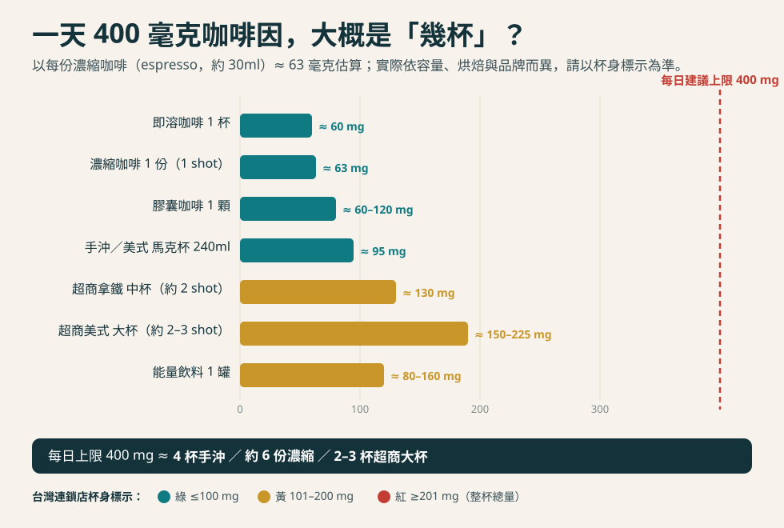

先講結論
「醫師，我有心律不整（或放過支架、有心臟病），是不是要戒咖啡？」這是門診裡幾乎每週都會被問到的問題。過去我們常直覺地說「有心悸就少喝咖啡」，但 2025 到 2026 年的最新實證，其實翻轉了一部分傳統觀念。
對大多數人來說，適量咖啡（每天咖啡因不超過 400 毫克，約 3 到 5 杯）是安全的，甚至和許多心血管好處有關。真正需要小心的是過量，以及少數對咖啡因特別敏感的人。
證據一：美國心臟協會 2026 咖啡科學聲明
2026 年，美國心臟協會發表了一份大型科學聲明，整理了大量研究後認為：每天咖啡因不超過 400 毫克（約 3 到 5 杯 240 毫升的咖啡）對多數成人是安全的，而且與較低的心血管疾病風險相關，包括冠狀動脈疾病、中風、心臟衰竭、心房顫動，以及高血壓與第二型糖尿病。
- 死亡率：習慣喝咖啡的人，全因死亡率一致偏低，最低點大約落在每天 2 到 4 杯（含咖啡因或低咖啡因都一樣）。
- 心律不整：規律喝咖啡者，適量咖啡與較低的心房顫動發生率相關，但可能會增加「心室早期收縮」（一種常見、多半良性的心跳提早）的頻率。
- 血壓：呈現彎曲的關係，少量（每天 1 到 3 杯）可能略微增加高血壓風險，量更高時反而不明顯。
- 膽固醇：未過濾的咖啡（例如法式壓濾壺、土耳其式、北歐煮沸咖啡）會升高低密度脂蛋白膽固醇（俗稱壞膽固醇）；用濾紙沖煮就少有這個問題。
要提醒的是，這份聲明的證據大多來自觀察性研究，只能說「有關聯」，還不能完全當成「因果」。它的價值在於：適量喝咖啡不必再背負沉重的罪惡感，但也不是鼓勵你為了護心去猛灌咖啡。
證據二：DECAF 隨機試驗——房顫整流後，喝咖啡反而復發更少？
更有意思的是 DECAF 隨機試驗（2025 年於美國心臟協會年會發表，同日刊登於《美國醫學會雜誌》）。這是少見直接用隨機分組來檢驗「咖啡因會不會誘發心房顫動」的研究。
研究找來 200 位持續性心房顫動、剛接受電擊整流恢復正常心律的病人（平均約 69 歲），隨機分成兩組：一組每天喝至少 1 杯含咖啡因咖啡，另一組完全戒除咖啡與咖啡因，追蹤半年。
結果：半年內心房顫動（或心房撲動）復發，喝咖啡組是 47%，戒咖啡組反而高達 64%——喝咖啡者的復發風險低了約 39%。兩組都沒有人死亡，急診與住院次數也相近。
換句話說，對這群病人，喝咖啡不但沒有增加房顫復發，反而比戒咖啡的人更少，直接挑戰了「有房顫就一定要戒咖啡」的舊觀念。
但別過度解讀：這個試驗是開放標籤（沒有遮盲）、人數不多（200 人），喝的是約 1 杯的中低劑量，而且對象本來就有喝咖啡的習慣。它不能推論成「叫從不喝咖啡的人開始猛喝」，個別病人也仍可能因咖啡因而心悸。
那到底「一天幾杯」才安全？
關鍵不是「幾杯」，而是總咖啡因毫克數——因為一杯的大小、幾份濃縮、什麼煮法，差很多。最實用的作法是記住每天上限 400 毫克，再用下面這張圖抓感覺：

幾個好記的換算（皆為約略值，實際依容量、烘焙與品牌而異）：
- 1 份濃縮咖啡（espresso，約 30 毫升）≈ 63 毫克咖啡因，是最好用的「基本單位」。
- 手沖／濾泡一馬克杯（約 240 毫升）≈ 95 毫克。
- 便利商店大杯拿鐵或美式常含 2 到 3 份濃縮 ≈ 約 150 到 225 毫克，一杯就可能用掉半天以上的額度。
- 膠囊咖啡一顆約 60 到 120 毫克，看是濃縮型還是大杯（lungo）型。
看杯身的紅黃綠標示台灣連鎖店會標咖啡因分級：綠 ≤100 毫克、黃 101 到 200 毫克、紅 ≥201 毫克（整杯總量）。這是最快的判斷法。
把一天加起來咖啡因不是只有咖啡——茶、含咖啡因飲料、部分感冒藥與提神產品都算。加總不超過 400 毫克是原則。
小心能量飲料與濃縮劑高劑量咖啡因（例如能量飲料、咖啡因錠）證據上傾向對心血管不利，別把它和一杯咖啡混為一談。
哪些人要特別小心？
- 孕婦與哺乳者：建議把咖啡因控制得更低，並先諮詢醫師。
- 對咖啡因敏感的人：喝了就明顯心悸、心跳亂、手抖或睡不著，就該減量。
- 血壓控制不良者：血壓還沒穩定前，別靠大量咖啡「提神」。
- 少數特定心律不整：極少數人咖啡因會誘發特定的心律不整或明顯症狀，這要個別評估。
一句話總結：對大多數心臟病人，不必再「滴咖啡不沾」；每天 400 毫克以內的適量咖啡多半安全，甚至可能有益。但喝了會不舒服就減量、能量飲料別亂灌、有疑問就和你的心臟科醫師討論——這比糾結「能不能喝」更重要。
本文為衛教整理，數據取自下列公開來源；個別能否喝咖啡、喝多少，仍應依你的心臟狀況與醫師評估為準。